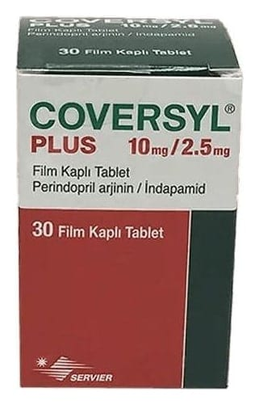

Coversyl Plus 10 mg/2.5 mg Film Kaplı Tablet, 30 Adet

Ne için kullanılır
KT · Bölüm 1• COVERSYL PLUS, 10 mg Perindopril Arjinin ve 2,5 mg İndapamid etkin maddelerini içeren bir bileşimdir. • COVERSYL PLUS antihipertansif grubuna aittir. Yetişkinlerde esansiyel (nedeni bilinmeyen) hipertansiyonun (yüksek kan basıncı) tedavisinde kullanılmaktadır. • Perindopril, anjiyotensin dönüştürücü enzim (ADE) inhibitörü adı verilen ilaçlar sınıfındandır. Bu tür ilaçlar kan damarlarını genişleterek kalbinizin damarlara daha rahat kan pompalamasını sağlar. • İndapamid bir diüretiktir. Diüretikler böbreklerde üretilen idrar miktarını artırır. Yine de indapamid üretilen idrar miktarını çok az artırdığı için diğer diüretiklerden farklıdır. Her iki etkin madde de kan basıncını azaltmaktadır ve kan basıncınızı kontrol etmek için birlikte çalışmaktadır. • COVERSYL PLUS film kaplı tablet beyaz renkte ve yuvarlaktır. 30 tabletten oluşan kapaklı kutuda bulunmaktadır.
• COVERSYL PLUS daha önce ayrı ayrı perindopril ve indapamid tablet kullanan hastalara reçete edilmektedir. Bu hastalar bundan böyle her iki etkin maddeyi içeren bir COVERSYL PLUS tablet kullanabilecektir. Bu ilaç buzağı kaynaklı laktoz monohidrat yardımcı maddesini içerir. Doktorunuza danışmadan ilacınızı kullanmayı bırakmayınız.